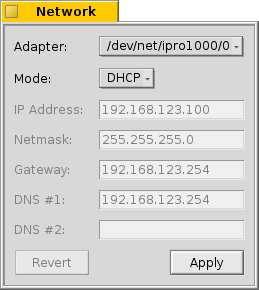

At the top, you choose which network adapter to configure.
Then you specify if you get your network settings dynamically from a server or router via DHCP or if you're using static addresses. If it's the latter, you'll have to fill out IP Address, Netmask, Gateway and DNS Servers yourself. Otherwise the panel will show the addresses currently set with DHCP.
| Revert | brings back the settings that were active when you started the Network preferences. | |
| Apply | sets the entered configuration. |